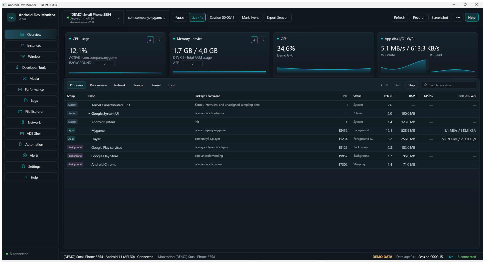
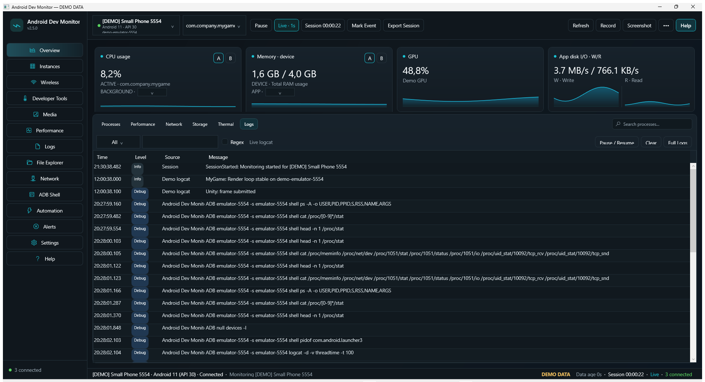
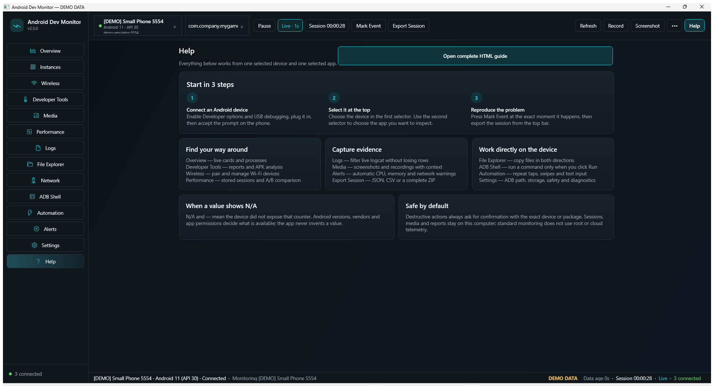

A Windows Task Manager for Android developers.
Monitor Android apps and devices through ADB, correlate performance spikes with actions and logs, and export sessions for debugging beta builds — on physical devices and local emulators.

What it does
Everything runs locally against your ADB connection.
Live performance
CPU, memory, app I/O, network, frame timing and jank, GPU and thermal signals on one timeline with session history.
Logcat 2.0
Crash and ANR filters, bookmarks, "10 seconds before the event" capture, saved filters, and instant export.
In-app mirror
Live screen view with click-to-tap, a visible touch marker, clipboard push, and an optional scrcpy window.
Emulator Control Center
Start, cold boot, wipe, snapshots, GPS fixes, fold/unfold, dark mode, font scale, sensors, and airplane mode.
Test Runner
Monkey stress with a fixed seed, crash and ANR scans, UI Automator dumps, plus automatic screenshot and logcat on failure.
Multi-device lab
Install, launch, screenshot and collect logs on every connected device, then export one ZIP with all evidence.
Analysis tooling
Bug report analyzer, APK and AAB inspection, permission lab with audit and rollback, background work and network inspectors.
Developer productivity
Install and update APKs, clear data, force stop, cold restart, type text, diff device properties, pixel-diff screenshots, browse app data.
Get started in three steps
No installer and no .NET SDK required for the downloadable build.
- Download the v2.6.0 ZIP and extract it anywhere.
- Double-click
AndroidDevMonitor.exe. The app opens even without ADB — try--demofor sample data. - Enable Developer options → USB debugging on the device, connect it, and accept the debugging prompt.
Wireless debugging is supported through pairing and connect flows. Some counters depend on Android version, vendor policy, or device permissions — the interface reports unavailable data instead of fabricating it.
Screens


Documentation
| Document | What it covers |
|---|---|
| User guide | Step-by-step instructions for every workspace, in Croatian. |
| Architecture | Projects, composition root, session handling, and ADB execution model. |
| Metrics | How each metric is collected and what it means. |
| ADB limitations | Which counters need specific Android versions, permissions, or vendor support. |
| Companion SDK | Tiny marker library that links app events with the ADM timeline. |
| Product notes | Design decisions, demo mode, and privacy model. |